小程序富文本怎么选？
对应短视频主题：小程序富文本怎么选？
更新于：2026-09-12
在小程序里展示文章，不是简单地把 HTML 字符串塞进一个组件。内容是否受控、是否包含代码和表格、是否来自外部输入、项目是否需要长期维护，都会改变答案。
本篇比较微信原生 rich-text、mp-html、wxParse 和 towxml。目标不是宣布“唯一最好”，而是根据内容边界做一个可复核的选择。
先用四个边界定义问题
{kind=link}
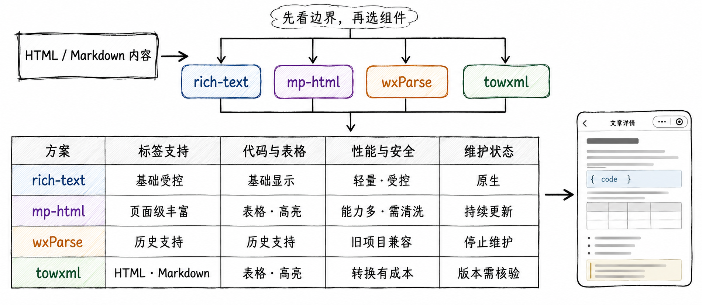
先比较标签能力、复杂内容、安全与性能责任、维护状态。
开始选型前，分别回答：
内容是不是受控的基础 HTML，还是来自编辑器、用户或外部站点？
是否需要代码高亮、复杂表格、视频、图片预览、锚点等页面级能力？
能否承担依赖升级、兼容测试、资源域名和输入安全维护？
项目是新项目，还是必须兼容一套历史渲染方案？
原生 rich-text：适合受控的基础内容
{kind=link}
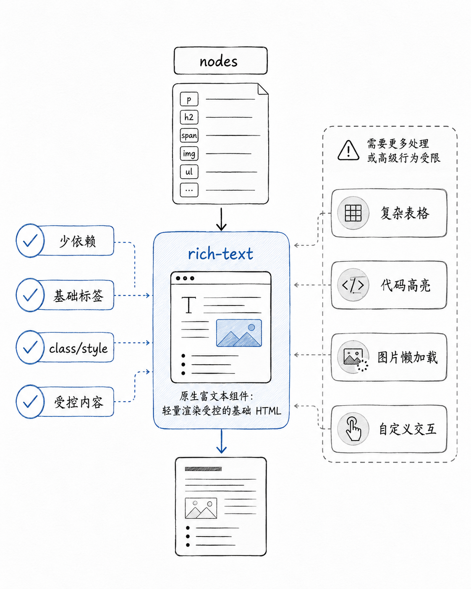
原生组件依赖少、路径短，但不是完整的浏览器 HTML 环境。
微信原生 rich-text 支持字符串或节点数组形式的 nodes，但只支持部分受信任的标签与属性；它不是完整网页渲染器，也不应被当作安全过滤器。对于结构简单、来源可控的正文，它的接入成本低；若内容需要复杂代码块、互动表格或多媒体体验，能力边界会很快显现。
{kind=link}
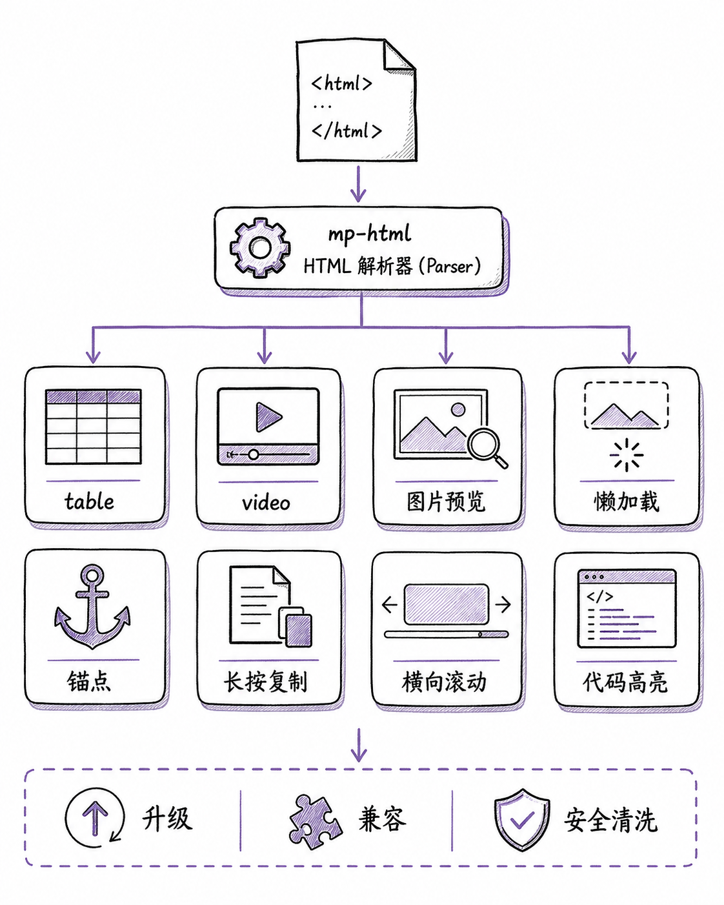
复杂文章的表格、代码、媒体与交互需求，往往超出基础组件的舒适区。
mp-html：面向复杂文章的渲染能力
{kind=link}
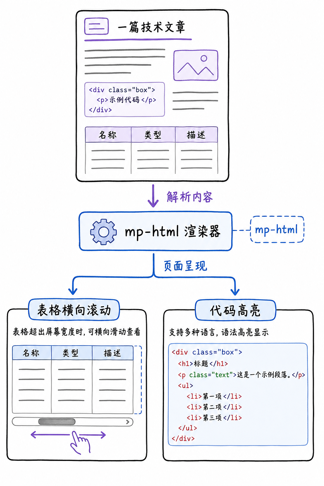
复杂技术文章可评估 mp-html，但要把升级、兼容和安全纳入维护预算。
mp-html 提供表格、图片预览、链接处理、锚点、代码高亮等丰富能力，并有按需启用的相关插件。它适合知识库、教程和富媒体内容，但“功能更丰富”不等于“零成本”：组件升级、插件组合、基础库兼容、资源加载和性能都要用你的内容和目标设备来验证。
wxParse：历史项目的兼容对象
{kind=link}
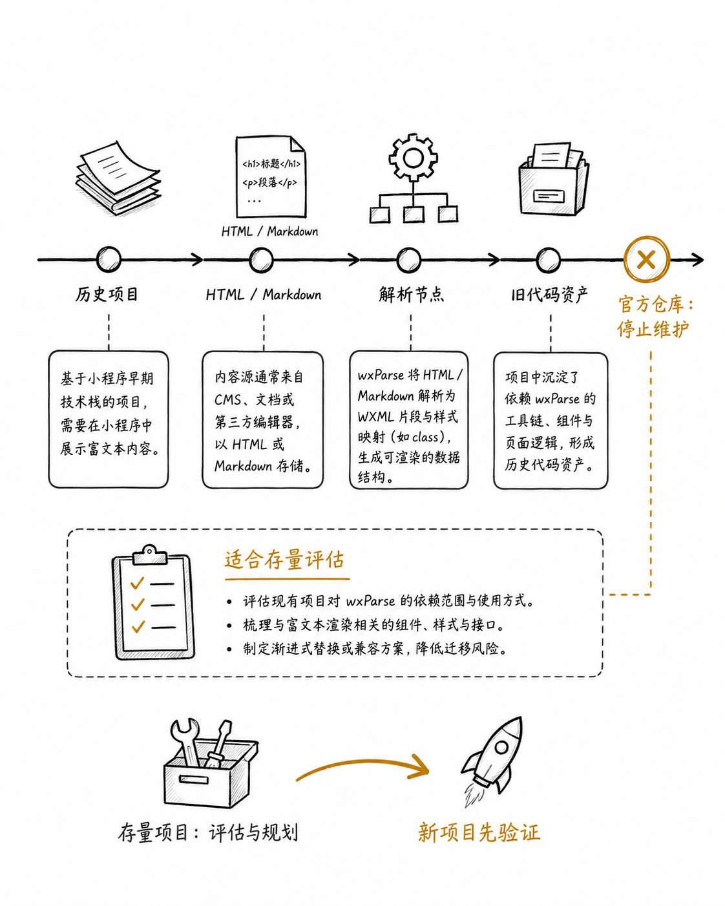
wxParse 可以帮助理解或维护存量项目，不应作为新项目的默认起点。
{kind=link}
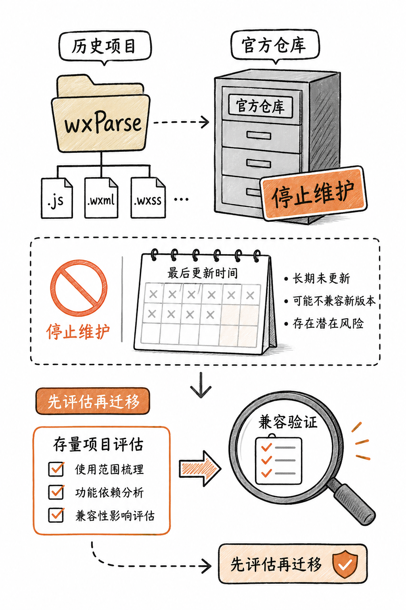
维护状态是选型事实：遇到旧项目时先做兼容、风险与迁移评估。
wxParse 的仓库已明确标注停止维护。因此它仍可能是旧项目里的现实约束，却不适合作为新项目默认选择。处理存量项目时，先核对依赖、基础库兼容、已知 bug、内容规模和迁移成本；不要为了“统一技术栈”在未验证的情况下重写。
towxml：转换路径与构建验证
{kind=link}
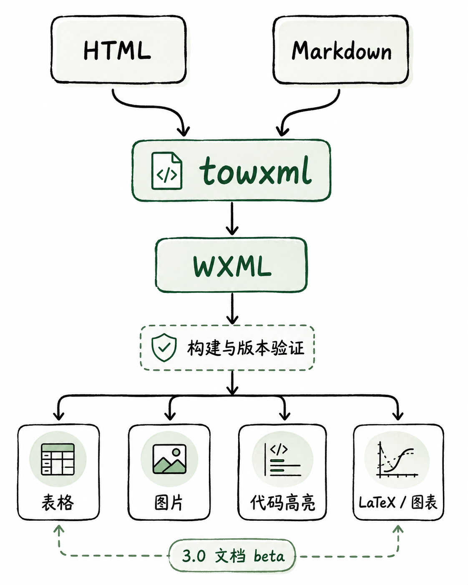
towxml 的价值在于转换能力与扩展性；接入前需要验证构建流程和当前版本边界。
Towxml 提供 HTML、Markdown 转 WXML 的路径，也覆盖代码高亮、表格、图片等能力。它更适合已有对应技术积累、且愿意维护构建与版本验证的团队。尤其在文档标记、构建方式和目标平台存在差异时，应先完成小样验证。
安全不属于任何一个渲染组件
{kind=link}
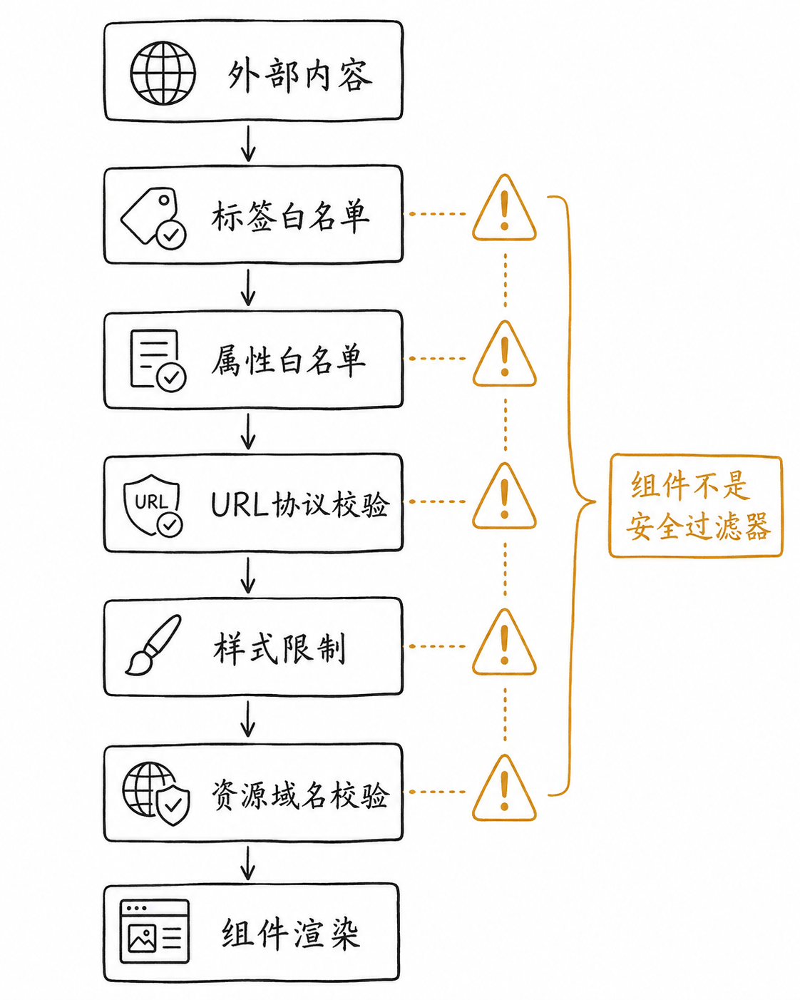
不可信内容必须先按标签、属性和业务需求清洗。
清洗之后，还需要分别检查用户点击的链接、页面样式和外部资源是否落在允许范围内。
{kind=link}
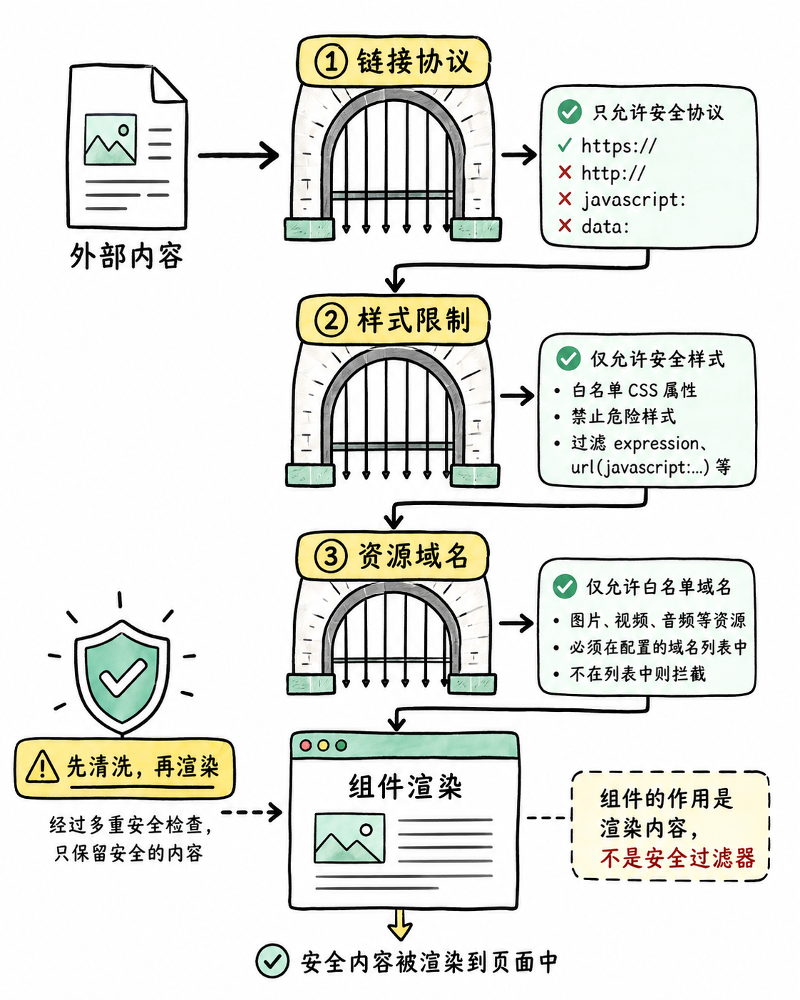
链接协议、样式字段和图片视频资源域名都应进入校验规则。
内容规模持续增大时，还要用真实设备观察解析、布局与资源加载带来的运行成本。
{kind=link}
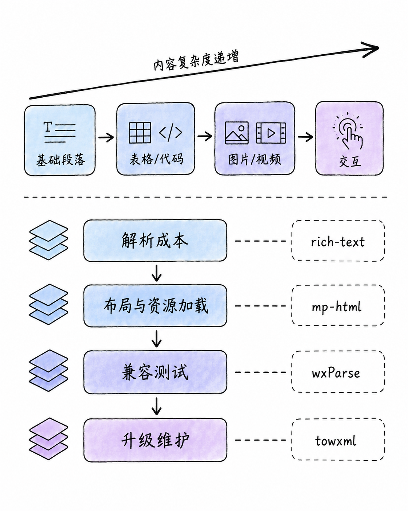
内容越复杂，越要在真实设备、真实内容规模下检查性能与维护成本。
无论使用哪种方案，外部输入都应在进入组件前经过业务化的清洗：只允许需要的标签和属性；验证 href、src 等 URL 的协议；限制样式字段；约束图片、视频等资源域名；并设置合理的内容长度和资源数量边界。组件负责显示，不代替你的输入信任策略。
一张决策树给出起点
{kind=link}
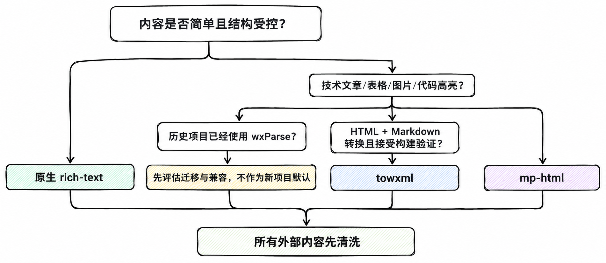
从内容复杂度、维护状态和转换需求出发选择初始方案。
决策树给出的是候选起点，最终仍要回到项目的实际内容样本和维护能力。
{kind=link}
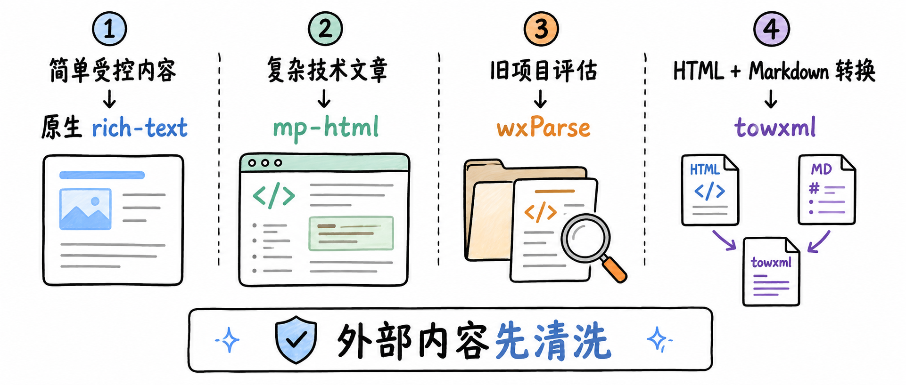
选型结论应是可验证的起点，而不是脱离项目的绝对排名。
可以先用这条经验法则建立候选集：
简单且受控的内容：优先评估原生
rich-text；复杂技术文章、表格、代码和富媒体内容：评估
mp-html，并承担依赖与安全维护；存量项目已经使用 wxParse：先做兼容和迁移评估，不把它作为新项目默认方案；
需要 HTML/Markdown 转换、团队接受构建与版本验证：评估
towxml。
最终请用一份接近真实的文章样本验证：包含长文、宽表格、代码块、多图、外链和异常输入，并在目标基础库与真机上完成测试。
参考与更新说明
本文的课程研究日期为 2026-09-08；组件版本、维护状态和平台支持均可能变化，接入前请回到相应项目与官方文档核验。